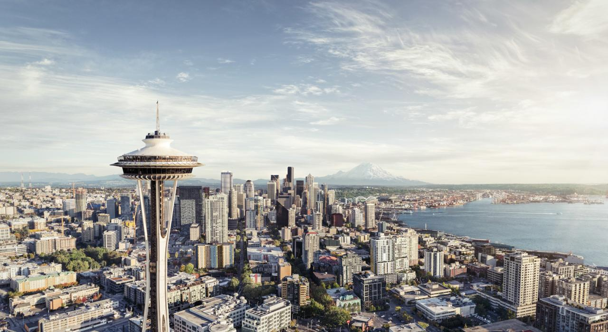

1. Seattle
2.

3. seattle.gif
4.

5. Seattle_Center_as_night_falls.jpg
6. Geographical Location: North America
7. Seattle is a coastal seaport city renowned for coffee, tech giants, the Space Needle, rich musical heritage, and evergreen landscapes.
8. Seattle, a vibrant city in the Pacific Northwest, is known for its iconic Space Needle, bustling Pike Place Market, and lush greenery.
9. Photo Gallery
10. Seattle_DayView.jpeg
11. Bright view in Seattle
12. Seattle Day View
13. Seattle_Rainier.jpg

14. Rainy view in Seattle
15. Seattle in Rain
16. Seattle_NightView.jpeg
17. Night view in Seattle
18. Seattle Night View
19. view-Seattle.webp

20. Sea view in Seattle
21. Seattle Sea View
2.1. Yellowstone National Park
2.

3. yellowstone_cauldron.gif
4.

5. yellowstone_cauldron.jpg
6. Geographical Location: North America
7. Home to geothermal wonders and abundant wildlife, Yellowstone is the first and oldest national park globally. Its iconic features include Old Faithful, colorful hot springs, and the Grand Canyon of the Yellowstone, offering visitors a mesmerizing blend of natural beauty and unique geological phenomena.
8. Spanning across Wyoming, Montana, and Idaho, Yellowstone National Park captivates with its diverse ecosystems. Witness breathtaking landscapes, from towering mountains to steaming geysers. This UNESCO World Heritage Site preserves a pristine wilderness, making it a haven for outdoor enthusiasts and nature lovers.
9. Photo Gallery
10. yellowstone_sunset.jpg

11. Sunset in Yellowstone National Park
12. National park sunset
13. yellowstone_sulphur_springs.JPG

14. Hotsprings in Yellowstone National Park
15. Yellowstone Sulphur Springs
16. yellowstone_travertine.JPG

17. Inside of Yellowstone National Park
18. Yellowstone Travertine
19. yellowstone_prism.MOV
20. Hot pond in Yellowstone National Park
21. Yellowstone National Park Prism
3.1. Monteverde, Costa Rica
2.

3. Monteverde.gif
4.

5. Monteverde_skyline.jpeg
6. Geographical Location: South America
7. Monteverde, Costa Rica is situated 4,662 feet above sea level. Monteverde’s famed cloud forests are the byproduct of fog (a thick, low-hanging cloud) tangling amongst the leaves and branches of the forest canopy. Trails and hanging bridges offer a close-up view of the diverse variety of animals and plants living in the forest.
8. One of the main tourist locations in Monteverde is the town of Santa Elena, which is not only home to a variety of restaurants with delicious food, but a serpentarium as well. You can enjoy hiking, ziplining, and observing the native wildlife while staying in Monteverde. It’s a truly beautiful place.
9. Photo Gallery
10. Monteverde_cloud_forest.jpeg

11.You can hike trails and zipline through the Monteverde cloud forests.
12. Clouds rolling through a line of trees.
13. Monteverde_hanging_bridges.jpeg

14. Hanging bridges over the cloud forests allow for a birds-eye view.
15. An image of a bridge hanging above the cloud forest canopy in Monteverde.
16. Monteverde_hummingbirds.jpeg

17. You can visit hummingbirds at Monteverde’s Selvatura Park’s hummingbird garden, which exhibits over 14 different species of hummingbird.
18. A hummingbird with green feathers drinking from a pink and orange flower.
19. Monteverde_el_tigre_waterfalls.jpeg

20. El Tigre Waterfalls is made up of four falls, which are connected by trails and hanging bridges.
21. A person in red standing in front of one of El Tigre’s four waterfalls.